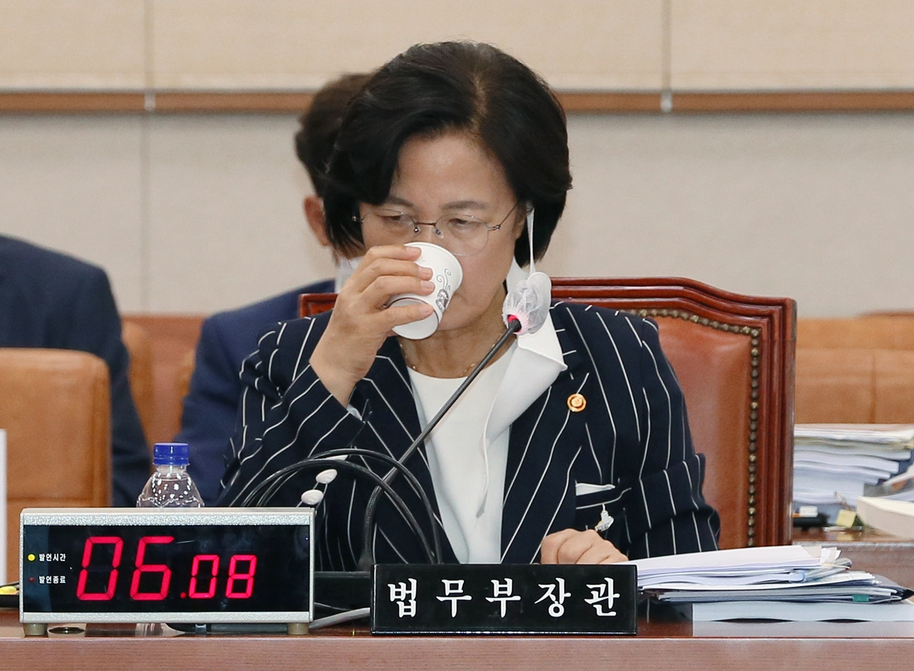
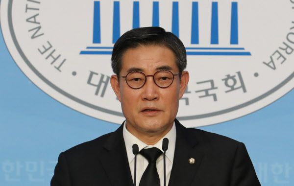
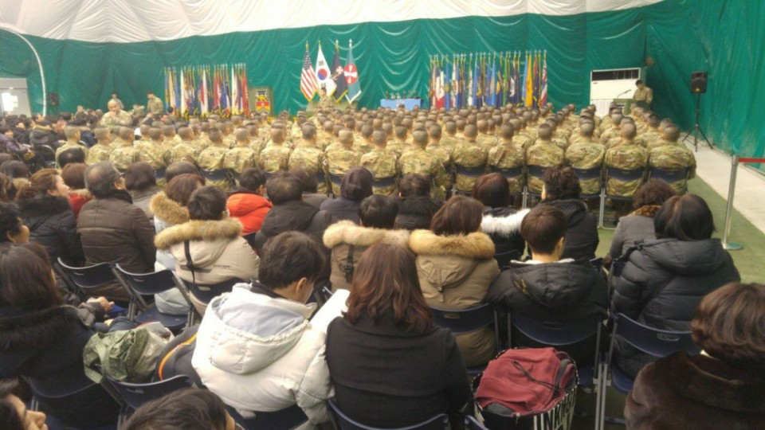

秋 아들 측 “청탁 없었다” 주장과 배치추미애 법무부 장관. 서울신문추미애 법무부 장관 아들 서모(27)씨의 카투사 복무 특혜 의혹과 관련해 주한 미8군 한국군지원단장이었던 이모 전 대령이 서씨의 부대 배치와 2018 평창동계올림픽 통역병 파견과 관련된 청탁 전화가 있었다는 보고를 받았다고 11일 밝혔다. 군 복무시 부적절한 청탁은 없었다는 서씨 측 입장과 상반되는 주장이다.
부하참모가 ‘모처에서 서씨 용산 배치 물었다’ 보고해
이 전 대령은 앞서 신원식 국민의힘 의원실이 공개한 통화녹취록에서 서씨의 부대 분류와 통역병 파견에 청탁이 있었다고 주장한 인물이다. 이 전 대령은 이날 “신 의원 보좌관과 통화했는데 일부 내용만 보도되어 오해의 소지가 있다”며 일부 언론에 입장문을 보냈다.
군 생활을 34년하고 지난해 11월 대령으로 전역했다는 그는 서씨의 군 복무 관련 청탁을 직접 받은 것이 아니라 참모들로부터 그런 내용을 보고받았다고 밝혔다. 이 전 대령은 “서씨가 미신병교육대에서 교육을 받고 있을 때 참모 한 명이 모처에서 서씨의 용산 배치 여부를 물었는데 안 된다고 하면서 카투사 부대 분류에 대해 설명했다는 보고를 했다”고 주장했다. 보고를 받은 이 전 대령은 “다른 참모들이 있는 자리에서 일체 청탁에 휘말리지 말라고 강조하면서 여러 가지 문제가 발생할 수 있다는 우려의 말을 했다”고 덧붙였다.신원식 미래통합당 의원 - 연합뉴스동계올림픽 통역병 선발에 “청탁전화 여러 번”
동계올림픽 통역병 청탁 역시 부하 장교들에게 보고받은 사항이라고 이 전 대령은 주장했다. 그는 “국방부로부터 통역병을 선발한다는 공문이 하달되자 참모들로부터 서씨와 관련해 여러 번 청탁 전화가 오고 (서씨가 복무한) 2사단 지역대에도 청탁 전화가 온다는 보고를 받았다”며 “부하들에게 나중에 큰 문제가 된다는 것을 인지시키고 지역대별 추첨으로 통역병을 선발하도록 지시했다”고 말했다. 이 전 대령은 이후 직접 2사단 지역대를 찾아가 서군을 포함한 지원병들을 모아놓고 제비뽑기로 통역병 파견자를 뽑았다고 했다.
다만 이 전 대령은 일부 언론 보도처럼 자신이 서씨 가족을 불러 따로 청탁을 하지 말라고 얘기한 것은 아니라고 해명했다. 그는 “미신병교육 수료식에 참석한 400여명의 가족분 중에 서씨 가족들도 오셨다는 얘기를 듣고 청탁 관련한 참모의 보고를 의식해 부대장 인사말과 부대소개 시간에 청탁을 하면 안 된다는 내용을 강조하며 당부 말씀을 드렸다”며 “일부 매체에서 보도된 것처럼 서군 가족에게만 한 것은 아니었고 별도 접촉하지도 않았다”고 설명했다. - 추미애 아들 서씨 측이 9일 공개한 미신병교육 수료식 사진. 서씨 측은 수료식이 전체 훈련병과 가족이 모인 가운데 열렸으며 자대배치 청탁은 결코 있을 수 없는 일이었다고 주장했다. 2020.9.9 서씨 측 법률대리인 제공“신원식 의원과 이번 일로 9년만에 통화”
앞서 지난 9일 서씨 측은 부대 배치 청탁이 있었다고 주장한 이 전 대령과 이를 보도한 언론사를 서울지방경찰청에 고소한 바 있다. 서씨 측 법률대리인인 현근택 변호사는 “수료식날 부대 관계자와 개인적으로 만난 사실이 없고 부대 배치와 관련한 청탁을 하지 않았으며 강당에서 수료식에 참석한 부모님들 전부를 모아놓고 자대배치에 대해 안내받은 것에 불과하다”고 주장했다.
이 전 대령은 서씨 관련 의혹을 제기한 육군 3성 장군 출신인 신원식 의원과 특수관계라는 일부 주장도 사실이 아니라고 반박했다. 이 전 대령은 “신 의원과 저는 3사단장과 참모장으로 2011년 1월 말부터 4월 말까지 약 3개월 같이 근무했다”며 “34년의 군생활 중 같이 근무한 수백명 가운데 한 분으로 이후 연락 없이 지냈고 이번 일로 거의 9년 만에 통화했다”고 설명했다.
이 전 대령은 “이번 사건이 더이상 정파싸움이 되지 말고 군의 청탁문화가 바뀌는 계기가 되어야 한다”며 “이 사건이 빨리 정의롭고 공정하게 해결되기를 기원한다”고 말했다.
오달란 기자 dallan@seoul.co.kr
▶ 네이버에서 서울신문 구독하기 클릭!
▶ 세상에 이런 일이 ▶ [연예계 뒷얘기] 클릭!
ⓒ 서울신문(www.seoul.co.kr), 무단전재 및 재배포금지